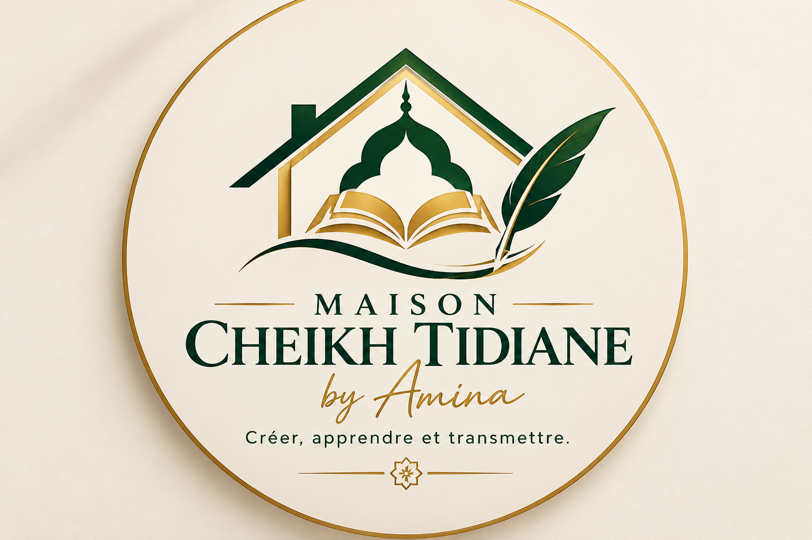

Créer, apprendre et transmettre.
Découvrir nos universMaison Cheikh Tidiane by Amina est un projet personnel qui réunit le développement web, l'écriture, la créativité et l'apprentissage. Inspiré par les valeurs de transmission, de savoir et d'excellence, ce projet a pour objectif de construire des réalisations utiles et durables.
Création de sites web modernes et responsives.
Rédaction d'histoires, récits et contenus créatifs.
Développement d'idées et de projets personnels.
Travaux créatifs et réalisations numériques.
Partager les connaissances et encourager l'apprentissage.
Bienvenue dans mon espace d'écriture. Vous y trouverez progressivement mes histoires, mes récits et mes créations littéraires.
Tout a commencé avec une idée simple : créer un espace où apprendre, créer et transmettre.
Au fil du temps, cette idée est devenue un projet. J'ai découvert le développement web, appris à construire des sites internet et commencé à imaginer un lieu capable de rassembler plusieurs univers : l'écriture, la créativité, les projets numériques et les ambitions entrepreneuriales.
C'est ainsi qu'est née Maison Cheikh Tidiane by Amina.
Ce nom est un hommage à Serigne Cheikh Tidiane Sy et aux valeurs de transmission, de savoir et d'inspiration qui m'accompagnent dans mon parcours.
Cette maison n'est pas seulement un site web. C'est un espace où les idées peuvent grandir, où les histoires peuvent être partagées et où les projets peuvent prendre vie.
Ce n'est que le début de l'aventure.
Bientôt disponible...
Bientôt disponible...
Email : thiounenemm30@gmail.com
📧 Me contacter 📄 Télécharger mon CV💻 GitHub : aminathioune
🌍 Portfolio : Amina Hijab